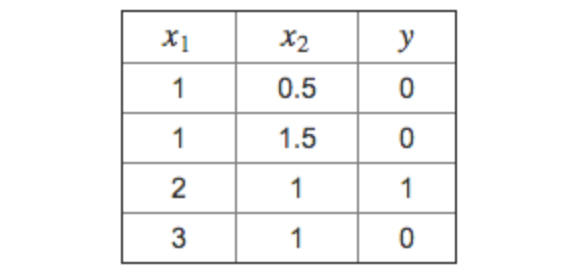
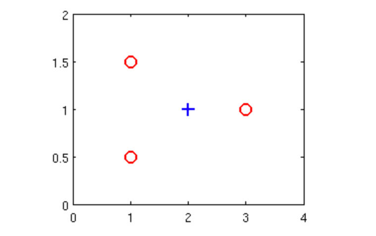

第 26 题
假设您已经训练了一个逻辑分类器，它在一个新示例x上输出一个预测hθ(x)=0.4。这意味着（选出所有正确项）：
查看答案与解析
答案 C、D
在这个二分类模型里 hθ(x) 是正类 y=1 的估计概率，所以 D 正确。另一类概率是 1−0.4=0.6，C 正确。A、B 把两者对调了。
系统输出一封邮件有 80% 的概率是垃圾邮件。这个概率从哪里来，又怎样决定把邮件放进垃圾箱？
先用加权和得到得分 z=θᵀx。θ 是模型系数，x 是特征向量，约定包含截距所需的常数 1。再用 Sigmoid 函数把得分映射到 0 到 1 之间。
hθ(x) = g(z) = 1/(1+e−z)e 是自然指数函数的底数，约为 2.718。z=0 时 h=0.5，z 越大概率越高。若 h=0.8，模型给正类的估计概率是 0.8，负类是 0.2。
阈值是做出分类的分界值。以 0.5 为例，h≥0.5 判正类，h<0.5 判负类。Sigmoid 一直递增，h=0.5 对应 z=0，所以解 θᵀx=0 就能画出边界。
只有 x₁、x₂ 的一次项时，边界通常是直线。加上平方项或交叉项，可得到弯曲边界。阈值改成其他数值时，应从 h 等于新阈值出发。
逻辑回归常用交叉熵损失。真实 y=1 时损失是 −ln(h)；真实 y=0 时是 −ln(1−h)。ln 是自然对数。模型分给真实类别的概率越小，惩罚越大，单个损失非负。
θⱼ ← θⱼ − (α/m) ∑i=1m (hθ(x(i))−y(i)) xⱼ(i)α 是学习率，m 是样本数，xⱼ(i) 是第 i 条样本的第 j 个特征。用旧系数算完所有更新，再一起替换。相比线性回归，关键区别在于预测值 h 含 Sigmoid。
设 z=4−2x₁，阈值为 0.5。边界在哪里？x₁=3 判哪类？
令 4−2x₁=0 得 x₁=2。x₁=3 时 z=−2，h 小于 0.5，判负类。
先独立作答，再展开解析核对。计算题可以在纸上列式。
假设您已经训练了一个逻辑分类器，它在一个新示例x上输出一个预测hθ(x)=0.4。这意味着（选出所有正确项）：
答案 C、D
在这个二分类模型里 hθ(x) 是正类 y=1 的估计概率，所以 D 正确。另一类概率是 1−0.4=0.6，C 正确。A、B 把两者对调了。
假设您有以下训练集，并拟合logistic回归分类器hθ(x)=g(θ₀+θ₁x₁+θ₂x₂)


以下哪项是正确的？选出所有正确项答案 A、B
图上正样本被负样本围在中间，可由封闭的非线性边界分隔。A 的平方项和交叉项提供了这种灵活性。每个交叉熵项都非负，所以 B 正确。C 把增加特征误当成增加样本；D 违反 Sigmoid 的取值范围。
逻辑回归的代价对第 j 个系数的梯度为 ∂J(θ)/∂θⱼ = (1/m)∑ᵢ₌₁ᵐ [hθ(x⁽ⁱ⁾)−y⁽ⁱ⁾]xⱼ⁽ⁱ⁾。学习率为 α 时，下面哪些是正确的梯度下降更新？
答案 B、D
更新第 j 个系数需要乘第 j 个特征 xⱼ⁽ⁱ⁾，所以 D 正确。把 hθ(x) 展开成 1/(1+e^(−θᵀx))，就是 B。A 直接用线性得分；C 把整个向量放到了标量更新里。
题册勘误 原题只列 D，展开 Sigmoid 后 B 与 D 等价。已将分数和求和下标排清楚。
以下哪项陈述是正确的？选出所有正确项
答案 B、C
Sigmoid 对有限实数的取值在 0 与 1 之间，B 正确；负对数概率非负，C 正确。A 中标准逻辑回归的交叉熵对参数是凸的；D 不能保证，线性回归的输出也可以超出 0 到 1。
假设训练一个逻辑回归分类器hθ(x)=g(θ₀+θ₁x₁+θ₂x₂)。假设θ₀=6,θ₁=−1,θ₂=0，下列哪个图表示分类器找到的决策边界？
答案 A
线性得分 z = 6−x₁。阈值 0.5 对应 z=0，所以边界是竖直线 x₁=6；左侧 x₁<6 时 z>0，预测正类。B 反了类别，C、D 用了错误的坐标轴。
Sigmoid 把得分映射为正类概率。阈值 0.5 时，解 θᵀx=0 得边界。